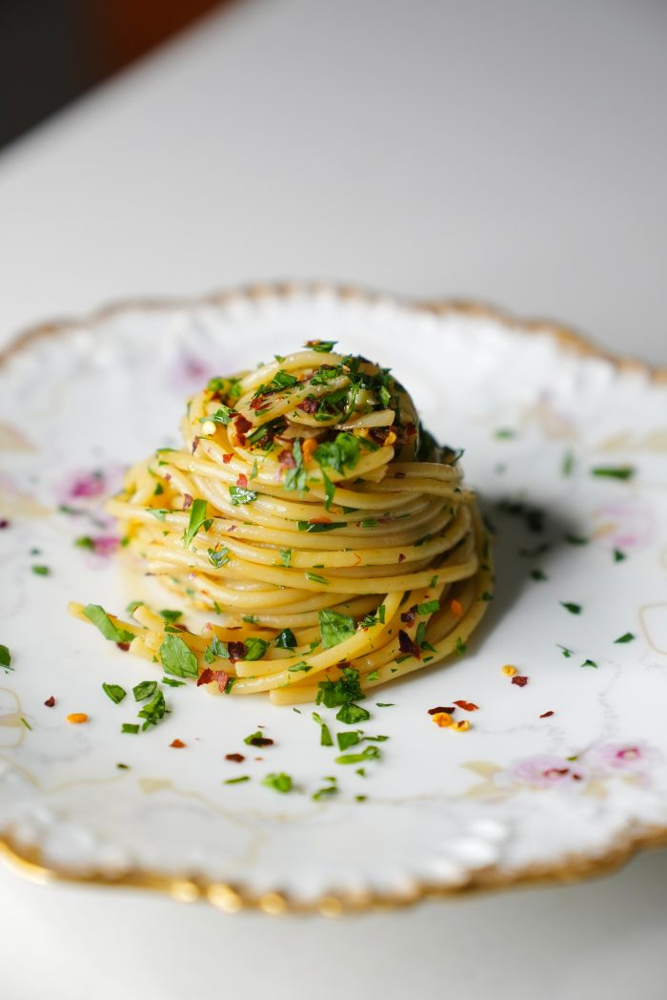

Pasta Aglio e Olio

Description
Pasta Aglio e Olio, translated to spaghetti with garlic and olive oil, is a deliciously simple italian dish of fresh garlic, olive oil, pasta and chili flakes.
Ingredients
- 1 pound uncooked spaghetti
- 1/2 cup of olive oil
- 6 cloves garlic, thinly sliced
- salt and freshly ground black pepper to taste
- 1/4 cup chopped fresh Italian parsley
- Optional: 1/2 cup finely grated Parmigiano-Reggiano cheese
Steps
- Bring a large pot of lightly salted water to a boil. Cook spaghetti in the boiling water, stirring occasionally until cooked through but firm to the bite, about 10 to 12 minutes. Drain and transfer to a pasta bowl.
- While the pasta is cooking, combine olive oil and garlic in a cold skillet. Cook over medium heat to slowly toast garlic, about 10 minutes. Reduce heat to medium-low when olive oil begins to bubble. Cook and stir until garlic is golden brown, about another 5 minutes. Remove from heat.
- Stir red pepper flakes, salt, and black pepper into pasta. Pour in hot olive oil and garlic, and sprinkle on Italian parsley; toss until combined.
- Optional: Serve pasta topped with Parmigiano-Reggiano cheese.